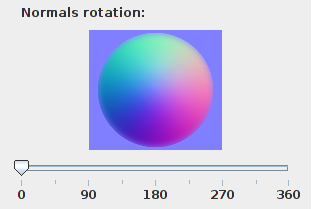
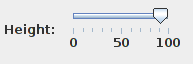

Select Normal map tab to show calculated normal map.
In the last section you can set up normal map to your liking by rotating normals or by changing height of the normal map.
In the side panel is section called Normals rotation.
Use the slider below to adjust direction of normals in your map.
You can change the height of the map by adjusting the slider Height:
Press Recalculate button to apply your changes to the map!